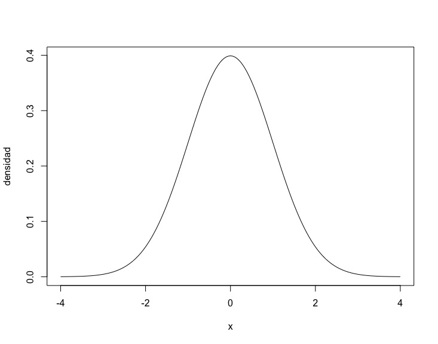
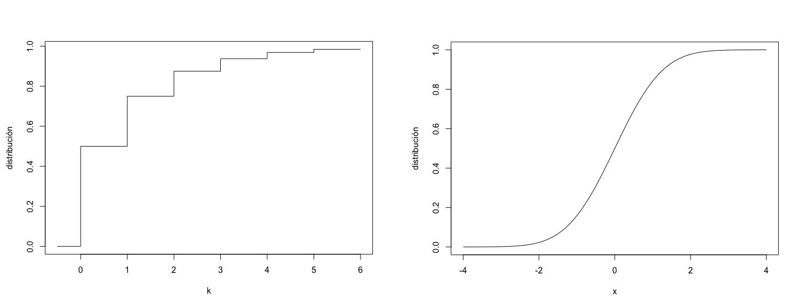

Capítulo 8 Variables aleatorias
Tienes dos dados en la mano y los vas a tirar. ¿Qué va a salir? Sólo sabes que será un número entre 2 (si sacas dos 1) y 12 (si sacas dos 6). El valor que vas a sacar a los dados cuando los tires, cada vez que los tires, es un valor que no conoces de antemano. En probabilidad y estadística a lo deconocdo se le suele llamar aleatorio y una variable que va a tomar un valor a priori desconocido se le llama variable aleatoria.
En este documento vamos a estudiar las características que tienen estas variables aleatorias y cómo podemos cuantificar la incertidumbre que tenemos con ellas.
8.1 ¿Qué es una variable aleatoria?
8.1.1 Variables discretas
Empecemos con los dados azul y rojo. Lo que queremos es de alguna manera cuantificar la incertidumbre de los dos dados. En este caso simple lo que podemos hacer es indicar en una tabla la probabilidad de sacar cada valor para cada dado:
Azul Rojo
Valor: 1 2 3 1 2 3
Probabilidad: 1/3 1/3 1/3 1/6 1/3 1/2A esta función, que para cada valor de una variable indica la probabilidad que aparezca, se llama una función de masa.
En nuestro ejemplo hemos indicado las funciones de masa de forma tabular, pero también lo podríamos haber hecho como una expresión algebraica. Para ello necesitamos un poco de notación. En el caso de funciones discretas, llamaremos \(k\) al valor que puede tomar la variable aleatoria. Tambien aparecerá el símbolo \(n\) que suele indicar el número de valores diferentes o al valor máximo que puede tomar la variable (suele quedar claro por el contexto). En este caso de los dados azul y rojo, \(k\) puede valer 1, 2 o 3 y \(n\) es 3. Las funciones de masa las podemos describir como:
\[a(k) = \frac{1}{n} \qquad r(k) = \frac{k}{2n}\]
Puedes comprobar que esto se corresponde con los valores de la tabla.
Podemos definir formalmente la función de masa: la función de masa \(f(k)\) de una variable aleatoria \(X\) es la probabilidad de que \(X\) tome el valor \(k\):
\[f(k) = \mbox{P}(X = k)\]
Veamos otro caso discreto, este infinito. Lanzamos un dado al aire hasta que nos salga cruz. Nos interesa saber cuántas caras han salido hasta llegar a esta primera cruz. Podemos tener 0 caras si la primera vez que lanzamos sacamos una cruz. La probabilidad de esto es \(1/2\). Para tener 1 cara debe salirnos primero una cara y después una cruz. Suponiendo razonablemente que las tiradas son independientes, la probabilidad de esto es \(1/2\cdot 1/2 = 1/4\). Para sacar exactamente 2 caras, debemos sacar cara la primera vez, cara la segunda vez, y cruz la tercera. La probabilidad de esto es \(1/2\cdot 1/2 \cdot 1/2= 1/8\). No es difícil darse cuenta que la función de masa \(f(k)\) es
\[f(k) = P(\mbox{núm. caras} = k) = \frac{1}{2^{k+1}}\]
Aunque es extremadamente improbable tener más de una docena de caras seguidas, \(k\) puede potencialmente extenderse hasta el infinito. Esto nos impide describir esta función como una tabla y debemos hacerlo con una expresión.
La función de masa es una manera de describir la distribución de una variable aleatoria. Hay otra, menos intuitiva, pero más útil, sobre todo antes de la disponibilidad de los ordenadores, que es la llamada función acumulativa de distribución. La palabra clave es acumulativa. Si la función de masa \(f(k)\) es la probabilidad de que la variable aleatoria \(X\) valga \(k\), la acumulativa \(F(k)\) es la probabilidad acumulada hasta \(k\). Es decir, la probabilidad de que valga \(k\) o menos:
\[F(k) = P(X = 1) + P(X = 2) + \cdots + P(X = k) = \mbox{P}(X \leq k)\]
Es decir que \(F(1) = f(1)\), \(F(2) = f(1) + f(2)\), etc. (hemos supuesto que \(k\) empezaba por 1. No tiene por qué ser así). Esta función, un tanto extraña, facilitaba el cálculo de probabilidades, como ilustraremos en el apartado correspondiente. Con la llegada de los ordenadores la diferencia es mucho menor, pero estas funciones siguen apareciendo en escritos y cálculos y por lo tanto sigue siendo necesario saber cómo son. Para nuestro ejemplo de los dados azul y rojo obtenemos:
Azul Rojo
Valor: 1 2 3 1 2 3
f(k) (masa): 1/3 1/3 1/3 1/6 1/3 1/2
F(k) (distribución): 1/3 2/3 1 1/6 1/1 1 8.1.2 Variables continuas
Cuando la variable es continua, la definición de función de masa ya no sirve. No sirve porque la probabilidad de que la variable aleatoria coja un valor concreto es siempre 0. ¿Cuál es la probabilidad de que una persona mida exactamente \(55 \pi\) cm? Esto es 172,787594743… cm. Habrá mucha gente que mida alrededor de 173 cm, ¿pero 172,787594743… sin desviarse nada de los infinitos decimales? Imposible. Pues lo mismo con 175 cm, es decir 175,000000…cm. La probabilidad es 0. Por lo tanto no podemos tener una función de masa como en el caso discreto.
Lo que tenemos es una función que hace un papel similar y que se llama función de densidad. En la figura siguiente tenemos la función de densidad de la distribución normal, la conocida campana de Gauss.

Vemos que para \(x = 0\) la densidad vale alrededor de 0,4 y que para \(x = 1,7\) vale aproximadamente 0,1. Notad que para las variables continuas usamos \(x\) para los valores de la variable. Esto no quiere decir que la probabilidad de que la variable aleatoria \(X\) valga 0 es 0,4. Ya hemos dicho que es 0. Lo que sí quiere decir que es unas 4 veces más probable que la variable valga algo que esté _alrededor} del 0 que algo que esté alrededor del 1,7. La función se llama de densidad debido a esto: la probabilidad es más “densa” alrededor del 0 que alrededor del \(2\) y del \(-2\), y es casi 0 alrededor del \(4\) y del \(-4\).
La definición formal es la siguiente. Sea \(dP[ x < X < x + dx]\) la probabilidad diferencial de que la variable aleatoria \(X\) se encuentre entre los valores \(x\) y \(x + dx,\) entonces la función \(f(x)\) es la que cumple que:
\[f(x)\, dx = dP[ x < X < x + dx]\]
Es decir, \(f(x)\, dx\) es la probabilidad diferencial de que la variable aleatoria \(X\) se encuentre entre los valores \(x\) y \(x + dx\).
Al igual que en el caso discreto, tenemos la función acumulativa de distribución, que se define de la misma manera: como la probabilidad acumulada de que valga \(x\) o menos:
\[F(x) = P[X \leq x]\]
Dada la definición de función de densidad, podemos calcular esta probabilidad como una integral:
\[F(x) = P[X \leq x] = \int_{-\infty}^{x}dP[ t < X < t + dt] = \int_{-\infty}^{x} f(t)dt\]
donde usamos \(t\) en la función para no confundirlo con la \(x\) del límite superior. Otra vez, tenemos una función menos intuitiva, pero que nos será útil para calcular probabilidades.
8.1.3 Propiedades de estas funciones
La valores de la función de masa son probabilidades, por lo tanto tienen las características de una probabilidad. Han de ser valores entre 0 y 1 y la suma de todos los valores ha de ser 1.
La función de densidad no es una probabilidad, por lo que puede tomar valores mayores que 1. Lo que no puede ser nunca es negativa: una densidad negativa implicaría que por esa zona tenemos probabilidades negativas.
La función de distribución, tanto en el caso discreto como en el continuo, es una acumulación de probabilidades. Por lo tanto para \(X = -\infty\) (o para el menor valor de \(X\) posible) la función de distribución vale 0 (\(F(-\infty) = 0\)). Para \(X = \infty\) (o para el mayor valor de \(X\) posible) hemos acumulado toda la probabilidad, y por lo tanto tiene que valer 1 (\(F(\infty) = 1\)). Además esta función de distribución ha de ser creciente ya que acumulamos probabilidades, que siempre son positivas. En la figura siguiente tenemos dos funciones acumulativas de distribución: a la izquierda la función discreta del número de caras seguidas al tirar un dado antes de sacar la primera cruz, y a la derecha, la de la función normal. En la discreta tenemos saltos de probabilidad en los valores 0, 1, 2, etc. debido a que en esos puntos (y sólo en esos puntos) tenemos cambios en el valor de la probabilidad.

8.2 Cálculo de probabilidades
8.2.1 Calculando a mano
Veamos cómo utilizar las funciones de masa, de densidad y de distribución para calcular probabilidades. Empecemos por el caso de variables discretas. Usaremos como distribución para los ejemplos la del número de caras seguidas antes de la primera cruz. Ya vimos que la función de densidad es \(f(k) = 1/2^{k+1}\). Se puede deducir que la función de distribución es \(F(k) = 1 - (1/2^{k+1})\).
Caso 1: \(P[X = k]\). Esta es fácil. Es la probabilidad que la variable tome un valor concreto. Eso es, por definición, la función de masa: \[P[X = k] = f(k)\]
La probabilidad de obtener 3 caras es \[P[\mbox{Caras} = 3] = f(3) = \frac{1}{2^{3+1}} = \frac{1}{16}\]
Caso 2: \(P[X \leq k]\). Otra que no es difícil. Esto es, por definición, la función acumulativa de distribución: \[P[X \leq k] = F(k)\]
La probabilidad de obtener 2 o menos caras es \[P[\mbox{Caras} \leq 2] = F(2) = 1 - \frac{1}{2^{2+1}} = \frac{7}{8}\] Ahora bien, si tenemos la función de masa, pero no la de distribución, lo podemos calcular también: \[P[X \leq k] = f(0) + f(1) + \cdots + f(k)\] (hemos supuesto que \(k\) empieza en 0. Si empieza en otro valor, pues empezamos por ese).
En nuestro ejemplo: \[P[\mbox{Caras} \leq 2] = f(0) + f(1) + f(2) = \frac{1}{2} + \frac{1}{4} + \frac{1}{8} = \frac{7}{8}\]
Caso 2(b): ¿Y si es menor estricto \(P[X < k]\)? La función de distribución está definida para menor o igual. Si es menor estricto, un pequeño truco: \[P[X < k] = P[X \leq k-1] = F(k-1)\] Atención con los menores estrictos, que son causa de muchos errores. Conviene aprender el truco, pues se usa mucho.
Caso 3: \(P[X > k]\). Aplicamos la probabilidad del caso contrario: \[P[X > k] = 1 - P[X \leq k] = 1 - F(k)\]
La probabilidad de obtener 3 o más caras es \[P[\mbox{Caras} > 3] = 1 - F(3) = 1 - \left(1 - \frac{1}{2^{3+1}}\right) = \frac{1}{16}\]
Si sólo tenemos la función de masa podemos calcular la probabilidad directamente o por el caso contrario. Haremos lo que lleve menos operaciones: \[P[X > k] = f(k+1) + f(k+2) + \cdots + f(n) = 1 - (f(k) + f(k-1) + \cdots + f(0))\]
En nuestro ejemplo sólo podemos hacerlo de la segunda manera: \[P[\mbox{Caras} > 3] = 1 - (f(3) + f(2) + f(1) + f(0)) = 1 - \left(\frac{1}{2} + \frac{1}{4} + \frac{1}{8} + \frac{1}{16}\right) = \frac{1}{16}\]
Caso 3(b): ¿Y si es mayor o igual? Ya sabemos qué hacer: \[P[X \geq k] = P[X > k-1] = 1 - F(k-1)\]
Caso 4, el caso general: \(P[k_{1} < X \leq k_{2}]\). Suponemos, naturalmente que \(k_{2} > k_{1}\). Empecemos en este caso por la función de masa. Es fácil ver que:
\[P[k_{1} < X \leq k_{2}] = f(k_{1}+1) + f(k_{1} + 2) + \cdots + f(k_{2}).\]
Para ver cómo calcularlo con funciones acumulativas de distribución vamos a sumar y restar \(f(0) + f(1) + \cdots + f(k_{1})\) (seguimos suponiendo que empezamos en \(k = 0\)):
\[P[k_{1} < X \leq k_{2}] = (f(0) + \cdots + f(k_{1})) + f(k_{1}+1) + \cdots + f(k_{2}) -(f(0) + \cdots + f(k_{1})).\]
Y ahora basta darse cuenta que \(f(0) + \cdots + f(k_{2}) = F(k_{2})\) y que \(f(0) + \cdots + f(k_{1}) = F(k_{1})\). Por lo que queda: \[P[k_{1} < X \leq k_{2}] = F(k_{2}) - F(k_{1}).\]
En nuestro ejemplo, la probabilidad de sacar más de 0 pero menos o igual a 4 caras es: \[P[0 < \mbox{Caras} \leq 4] = F(4) - F(0) = \frac{31}{32} - \frac{1}{2} = \frac{15}{32}\]
Si en vez del \(<\) tenemos un \(\leq\), o en vez del \(\leq\) tenemos un \(<\) aplicamos el truco de siempre. Entonces, por ejemplo,
\[P[k_{1} \leq X \leq k_{2}] = P[k_{1}-1 < X \leq k_{2}] = F(k_{2}) - F(k_{1}-1).\]
Vemos aquí el motivo principal del uso de la función acumulativa de distribución. En vez de tener que sumar 20 o 30 términos, nos basta con restar 2.
Pasemos ahora al caso de variables continuas. Hay menos casos debido a que \(P[X = x] = 0\). El caso 1 de las discretas ya no interesa. Además no hay que distinguir entre \(X \leq x\) y \(X<x\) (o \(X \geq x\) y \(X>x\)) ya que la única diferencia entre ambas es \(P[X = x]\) que es 0. Como ejemplo usaremos la distribución uniforme entre 0 y 1. Esto quiere decir que cualquier valor real entre 0 y 1 es igualmente probable. La función de densidad es \(f(x) = 1\) y la de distribución es
\[F(x) = \left\{ \begin{array}{ll} 0 &\mbox{ si } x < 0\\ x &\mbox{ si } 0 \leq x \leq 1\\ 1 &\mbox{ si } x > 1 \end{array}\right. .\]
Caso 1: \(P[X \leq x]\). Esto es por definición la función acumulativa de distribución: \[P[X \leq x] = F(x)\]
La probabilidad de obtener un valor menor que 0,2 en la distribución uniforme del ejemplo es \[P[X \leq 0,2] = F(0,2) = 0,2\]
Ahora bien, si tenemos la función de masa, pero no la de distribución, lo podemos calcular integrando:
\[F(x) = P[X \leq x] = \int_{-\infty}^{x}f(t)dt\]
En nuestro ejemplo: \[P[X \leq 2] = \int_{0}^{0,2}1\,dt = \left. t \right|_{0}^{0,2} = 0,2 - 0 = 0,2\]
Vemos que en el caso continuo sí que es muy interesante usar la función acumulativa de distribución: nos ahorramos integrar (esta era fácil, pero las hay muy complicadas).
Caso 2: \(P[X > x]\). Aplicamos la probabilidad del caso contrario: \[P[X > x] = 1 - P[X \leq x] = 1 - F(x).\]
En nuestro ejemplo, la probabilidad de que valga más de 0,6 es \[P[X > 0,6] = 1 - P[X \leq 0,6] = 1 - 0,6 = 0,4.\]
Y si sólo tenemos la función de densidad, otra vez toca integrar:
\[P[X > x] = \int_{x}^{\infty}f(t)dt\]
En nuestro ejemplo \[P[X > 0,6] = \int_{0,6}^{1} 1\,dt = \left. t \right|_{0,6}^{1} = 1 - 0,6 = 0,4\]
Caso general: \(P[x_{1} < X \leq x_{2}]\). Podría sumar y restar integrales, de manera similar a como hicimos en el caso discreto, pero voy a usar otro argumento (que también se puede usar en el caso discreto). En vez de restar las integrales sumamos y restamos la probabilidad de \(P[X \leq x_{1}]\):
\[P[x_{1} < X \leq x_{2}] = P[X \leq x_{1}] + P[x_{1} < X \leq x_{2}] - P[X \leq x_{1}].\]
Ahora bien, \(P[X \leq x_{1}]\) y \(P[x_{1} < X \leq x_{2}]\) son probabilidades incompatibles, por lo tanto
\[P[X \leq x_{1}] + P[x_{1} < X \leq x_{2}] = P[X \leq x_{1} \mbox{ o } x_{1} < X \leq x_{2}].\]
Pero \(P[X \leq x_{1} \mbox{ o } x_{1} < X \leq x_{2}] = P[X \leq x_{2}]\). Y nos queda
\[P[x_{1} < X \leq x_{2}] = P[X \leq x_{2}] - P[X \leq x_{1}] = F(x_{2}) - F(x_{1}).\]
En nuestro ejemplo, la probabilidad de que la variable tenga un valor entre 0,15 y 0,72 es \[P[0,15 < X \leq 0,72] = F(0,72) - F(0,15) = 0,72 - 0,15 = 0,57.\]
Si no tenemos la función acumulativa de distribución, toca integrar:
\[P[x_{1} < X \leq x_{2}] = \int_{x_{1}}^{x_{2}} f(x)\, dx.\]
Lo dejo como ejercicio para el caso de nuestro ejemplo.
Vuelvo a recordar que en el caso continuo no hay diferencia entre menor o igual y menor estricto (o mayor o igual y mayor estricto), por lo que
\[P[x_{1} \leq X < x_{2}] = F(x_{2}) - F(x_{1}) = \int_{x_{1}}^{x_{2}} f(x)\, dx.\]
8.2.2 Calculando con R
R trae muchas distribuciones incorporadas: la normal, la binomial, la de Poisson, la uniforme, etc. Para cada una de estas distribuciones trae 4 funciones de las que en este momento nos interesan 2: la de densidad o masa, y la acumulativa de distribución. La nomenclatura es la siguiente: se antepone una “d” al nombre de la distribución para tener la función de densidad o masa, y una “p” para obtener la acumulativa de distribución. Así, para la distribución normal (que recordemos es continua) la función de densidad sería dnorm() y la de distribución pnorm(). Para la distribución de Poisson, que es discreta, dpois() sería la de masa y ppois() la de distribución.
Así, si tenemos una distribución normal, continua, de media 0 y desviación estandar 1 (los valores que R usa por defecto), para calcular la probabilidad \(P[-1 < X < 0,5]\) escribimos
> pnorm(0.5) - pnorm(-1)
[1] 0.5328072Es decir que la probabilidad de que una variable aleatoria en una distribución normal de media 0 y desviación estandar 1 tome un valor entre \(-1\) y \(0.5\) es \(0.533\).
R no integra, por lo que no tenemos otra forma de calcular la probabilidad. Si tenemos una distribución discreta, como la de Poisson, sí que podemos calcular la probabilidad tanto con la función de masa como con la de distribución.
No vamos a entrar en detalles aquí con las características de la distribución de Poisson. En este momento hemos de decir que es discreta y que depende de un parámetro llamado \(\lambda\) y al que le vamos a dar el valor de 2. Para calcular que una variable aleatoria que sigue una distribución de Poisson con parámetro \(\lambda = 2\) valga 1 debemos usar la función de masa dpois():
> dpois(1,2)
[1] 0.2706706Luego la probabilidad \(P[X = 2] = 0.27\).
Si queremos calcular la probabilidad \(P[1 < X \leq 6]\) lo podemos hacer tanto con la de masa como con la acumulativa de distribución:
> ppois(6,2)-ppois(1,2)
[1] 0.5894603
> dpois(2,2) + dpois(3,2) + dpois(4,2) + dpois(5,2) + dpois(6,2)
[1] 0.5894603En ambos casos da lo mismo (como toca): la probabilidad es de 0,59.
8.2.3 Resumen
Una variable aleatoria es una variable de la que desconocemos el valor que va a tomar. Eso sí, cada posible valor lo tomará con una determinada probabilidad. A esta se le llama la distribución de la variable aleatoria.
Tenemos dos funciones para describir la distribución: la de masa o densidad y la acumulativa de distribución. La función de masa sólo se usa en variables discretas y es simplemente la probabilidad de que la variable tome el valor \(k\): \(f(k) = P[X = k]\). En el caso continuo usamos la función de densidad que nos da la densidad de probabilidad: cuanto mayor es el valor de esta función en un punto \(x\), más probable es que la variable tome valores alrededor de \(x\). Eso sí, la probabilidad de que la variable tome exactamente el valor \(x\) es 0.
Tanto en el caso discreto como el continuo la función acumulativa de distribución en el punto \(x\) se define como la probabilidad acumulada hasta ese punto: \(F(x) = P[X \leq x]\).
Podemos usar estas funciones para calcular probabilidades. En el caso discreto, la expresión general es \[P[k_{1} < X \leq k_{2}] = F(k_{2}) - F(k_{1}) = f(k_{1}+1) + f(k_{1} + 2) + \cdots + f(k_{2}).\]
y en el continuo\[P[x_{1} \leq X < x_{2}] = F(x_{2}) - F(x_{1}) = \int_{x_{1}}^{x_{2}} f(x)\, dx.\]
R trae incorporadas las funciones de masa o densidad y distribución
de muchas distribuciones.